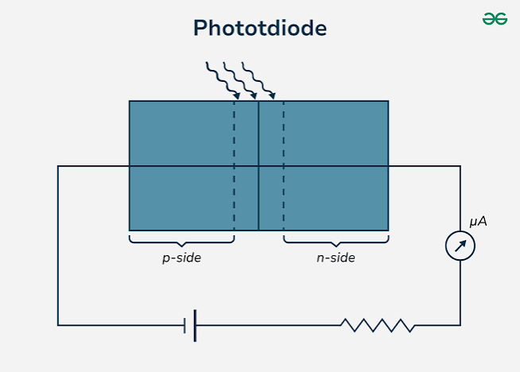
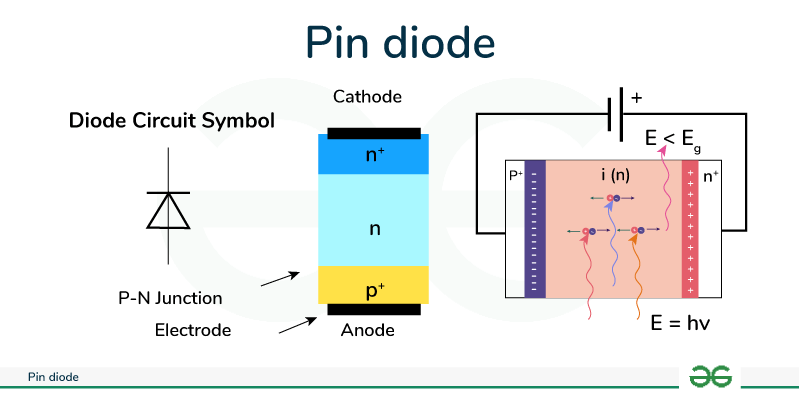

1D SAGCM SPAD Simulator
Summer internship report — PI: Prof. Rajendra Singh Guide: Dr. Pawan Kumar Supervisor: Dr. Smita Srivastava
This report is about a computer program that simulates a special light detector called a SPAD. Our program can calculate the electric field, current, noise, and many other things inside the detector. It uses real material properties from published research papers.
In the future, we want to make a 3D version of this simulator. This will help us study afterpulsing and timing jitter — two problems that current tools cannot handle.
Chapter 1: Semiconductors for Photodetection
1.1 Silicon — The Starting Point
Silicon is the most common material used in electronics. It was also the first material used to detect light. Here are its main properties:
| Property | Value | What It Means |
|---|---|---|
| Bandgap $E_g$ | 1.12 eV | Can only detect light up to $\lambda_c = 1240/1.12 \approx 1100$ nm wavelength |
| Crystal structure | Diamond cubic | Easy and cheap to make |
| Native oxide | $\text{SiO}_2$ (excellent) | Helps make MOS transistors (used in computer chips) |
| Electron mobility | 1350 cm²/V·s | Pretty fast |
Indirect Bandgap
Silicon has an indirect bandgap. This means the top of the valence band and the bottom of the conduction band are at different places in the crystal. An electron needs help from a vibration in the crystal (called a phonon) to jump across the gap. This makes it hard for silicon to give off light.
- Good for detectors — light absorption still works, just slower. Silicon cameras are everywhere.
- Bad for LEDs and lasers — making light needs efficient recombination. Silicon LEDs are very dim ($\ll 1\%$ efficiency).
Silicon works fine for visible light. But we need to detect telecom wavelengths (1310 nm and 1550 nm) — these are the wavelengths used in fiber-optic internet. Silicon cannot see these wavelengths. So we need different materials.
1.2 Why III-V Semiconductors?
III-V materials are made from elements in groups III and V of the periodic table (like Gallium, Indium, Arsenic, Phosphorus). They are better than silicon for light detection because:
- Tunable bandgap — by mixing different elements, we can change the bandgap from 0.35 to 2.5 eV
- Direct bandgap — they absorb light much better than silicon
- High electron mobility — carriers move faster
- Lattice matching — some III-V materials share the same crystal size, so we can grow them on top of each other without defects
1.3 InGaAs and InP — The Telecom Materials
InGaAs (In$_{0.53}$Ga$_{0.47}$As)
- Absorbs light from 1000–1700 nm — covers both telecom windows (1310 nm and 1550 nm)
- Strong absorption: $\alpha \sim 10^4$ cm$^{-1}$ — a 1.5 μm layer absorbs >95% of 1310 nm light
- Direct bandgap → turns light into electricity very well
InP (Indium Phosphide)
- Transparent at 1310/1550 nm — light passes right through it
- Great for making avalanches — high ionization threshold, low noise
- Lattice matched to InGaAs at $a = 5.8687$ Å — we can stack them perfectly
| Material | $E_g$ (300 K) | $n_i$ (300 K) | $\lambda_c$ | Job |
|---|---|---|---|---|
| Si | 1.12 eV | $\sim 1 \times 10^{10}$ cm$^{-3}$ | 1100 nm | — |
| InGaAs | 0.75 eV | $\sim 6 \times 10^{11}$ cm$^{-3}$ | 1650 nm | Absorber |
| InP | 1.35 eV | $\sim 1 \times 10^{7}$ cm$^{-3}$ | 920 nm | Multiplier |
1.4 From PN Junction to SPAD — Photodetector Evolution
Over time, people made better and better light detectors. Each new design fixed a problem with the old one. Here is the chain:
PN Photodiode

A PN photodiode is just a p-n junction with a reverse voltage applied. When light hits it, an electron gets knocked loose and current flows. The more light, the more current.
The cut-off wavelength is set by the bandgap: $\lambda_c = 1240 / E_g(\text{eV})$ nm. Longer wavelengths pass right through.
| Aspect | Detail |
|---|---|
| How it works | Reverse-biased p-n junction; current $\propto$ light power |
| Gain | None (each photon → at most one electron) |
| Speed | Slow — some carriers have to diffuse, which takes time |
| Efficiency | Low to moderate — only a thin region works well |
| Good things | Simple to make, cheap, well-understood |
| Bad things | Low response, slow, bad at low light levels |
PIN Photodiode

To fix the PN's thin active region, a PIN photodiode puts a thick intrinsic (i) layer between the p and n regions. Under reverse bias, this whole layer is depleted (empty of free carriers), giving lots of room for light to be absorbed.
| Aspect | Detail |
|---|---|
| How it works | Reverse-biased p-i-n; light generates carriers in the i-layer |
| Gain | None |
| Speed | Fast — all carriers drift (no slow diffusion) |
| Efficiency | High — the thick i-layer absorbs most light |
| Good things | Better than PN, faster response |
| Bad things | No gain — need a fancy amplifier; still cannot detect single photons |
APD — Avalanche Photodiode
An avalanche photodiode uses a high voltage so that carriers gain enough energy to impact-ionize. One carrier creates more carriers, which create even more — like a snowball rolling downhill. This gives internal gain ($M = 10$–$100$) without an external amplifier.
| Aspect | Detail |
|---|---|
| How it works | Reverse-biased near (but below) $V_{BR}$; carriers impact-ionize in the high-field region |
| Gain | $M = 10$–$100$ (linear multiplication) |
| Speed | Fast — avalanche builds in picoseconds |
| Excess Noise | $F(M) = k_{\text{eff}} M + (1 - k_{\text{eff}})(2 - 1/M)$ — lower $k_{\text{eff}}$ = less noise |
| Good things | Internal gain improves signal-to-noise ratio |
| Bad things | Noise from random multiplication; gain changes with temperature and voltage; still cannot see single photons |
SPAD — Single-Photon Avalanche Diode
A SPAD is an APD biased above $V_{BR}$ (this is called Geiger mode). A single photo-generated carrier triggers an avalanche that grows into a huge current (mA-scale), easy to detect with simple electronics. A quenching circuit then lowers the voltage to stop the avalanche.
| Aspect | Detail |
|---|---|
| How it works | Biased above $V_{BR}$; one carrier → infinite gain (Geiger mode) |
| Gain | Effectively infinite (self-sustaining) |
| Output | Digital pulse (avalanche or no avalanche) |
| Sensitivity | Single photon |
| Good things | Single-photon sensitivity; digital output; sub-ns timing possible |
| Bad things | Dead time after each avalanche; afterpulsing from trapped carriers; dark counts from thermal/tunnel generation |
Chapter 2: Avalanche Photodiode (APD) Theory
2.1 The I-V Characteristic
An APD is a p-n junction run in reverse bias. The current goes through several stages as voltage increases:

Figure 2: I-V characteristic showing dark current (blue) and illuminated current (orange) vs reverse bias.
- Low voltage ($V \ll V_{BR}$): Small dark current from heat. Photocurrent is roughly constant (one electron-hole pair per absorbed photon).
- Medium voltage: Depletion region widens. Dark current increases slowly. Still no multiplication.
- Punch-through ($V = V_{PT}$): The depletion region reaches through the absorber to the multiplication-region edge. After this voltage, photo-generated carriers from the absorber start to experience the high field and can ionize. The photocurrent rises because collection efficiency gets better. Punch-through is not breakdown; it is when the absorber becomes fully depleted.
- Near breakdown ($V \to V_{BR}$): Impact ionization begins. Carriers gain enough energy to create secondary pairs. Current starts rising fast.
- At breakdown ($V = V_{BR}$): Gain $M \to \infty$. A single carrier triggers a self-sustaining avalanche. This is Geiger mode used in SPADs.
2.2 Multiplication and Gain
When a carrier travels through the high-field multiplication region, it can hit atoms and knock loose more carriers. This is impact ionization:
The multiplication factor $M$ is the average number of electron-hole pairs made by one injected carrier. It comes from the McIntyre integral. We define the net ionization gradient $\mu(x) = \alpha(x) - \beta(x)$:
Both formulas give the same result. The denominator is the feedback loop — when it hits zero, gain goes to infinity and the device reaches breakdown.
2.3 Excess Noise Factor
Avalanche multiplication is random — sometimes you get more gain, sometimes less. The excess noise factor $F(M)$ tells us how noisy this randomness is:
| $k_{\text{eff}}$ | Noise | Material |
|---|---|---|
| $k = 1$ | Worst: $F = 2M - 1$ | Si (if both carriers ionize equally) |
| $k = 0$ | Best: $F = 2$ | Asymmetric ionization |
| $k \approx 0.4$ | Moderate | InP (our material) |
2.4 Quantum Efficiency
The external quantum efficiency (EQE) is the chance that one incoming photon creates a measurable electron-hole pair:
- $(1 - R)$: Light lost to reflection ($R \approx 0.3$ for uncoated InP)
- $1 - e^{-\alpha L}$: Chance the light gets absorbed in the InGaAs layer
- $\eta_{\text{collection}}$: Chance that photo-generated carriers reach the multiplication region
The photodetection probability (PDP) also includes the trigger probability:
Chapter 3: Single-Photon Avalanche Diodes
3.1 Why Move from APD to SPAD?
| Feature | APD (Linear Mode) | SPAD (Geiger Mode) |
|---|---|---|
| Bias | $V < V_{BR}$ | $V > V_{BR}$ (overbias) |
| Gain | Finite ($M \sim 10$–$100$) | Basically infinite (self-sustaining) |
| Output | Analog current $\propto$ light power | Digital pulse (avalanche or not) |
| Sensitivity | ~nW | Single photon |
| Timing | Limited by RC, transit time | Sub-ns jitter possible |
| Circuit | Transimpedance amplifier | Quench circuit (active or passive) |
3.2 SPAD Architectures
SAM — Separate Absorption and Multiplication
- Structure: InGaAs absorber + InP multiplier, no charge sheet
- Problem: The electric field leaks into the absorber, causing tunneling dark current
- Use: Simple but limited performance
SAGCM — Separate Absorption, Grading, Charge, Multiplication
- Structure: Adds a grading layer (InGaAsP) and a charge sheet (n+ InP)
- Grading layer: Smooths the energy step at the InP/InGaAs interface — stops carriers from getting trapped
- Charge sheet: Controls the field — high field in InP (for multiplication), low field in InGaAs (reduces tunneling)
- This is our architecture
SACM — Separate Absorption, Charge, Multiplication
- Like SAGCM but without the grading layer
- The energy barrier traps holes → afterpulsing
Reach-Through
- The depletion region extends all the way from the multiplier through the absorber to the contact
- Good collection but harder to control the field profile
3.3 Our SAGCM SPAD
Our device (data/device_sagcm.xml) has 7 layers stacked from the top ($x=0$, p-contact) to the bottom ($x=9.00\ \mu$m, n-contact):
| # | Material | Thickness | Doping | Role |
|---|---|---|---|---|
| 0 | InP | 2.77 μm | p+ $4\times10^{17}$ | Cap / p-contact |
| 1 | InP | 0.59 μm | n- $1\times10^{15}$ | Multiplication region |
| 2 | InP | 0.25 μm | n+ $1\times10^{17}$ | Charge sheet (field control) |
| 3 | InGaAsP | 0.06 μm | n $1\times10^{16}$ | Grading layer |
| 4 | InGaAs | 2.83 μm | n- $1\times10^{15}$ | Absorber |
| 5 | InP | 0.50 μm | n+ $6.6\times10^{16}$ | Buffer |
| 6 | InP | 2.00 μm | n+ $3\times10^{18}$ | Substrate / n-contact |
3.3.1 Multi-Node Grid
The 7 layers are divided into a uniform 1D grid of 500 nodes spread evenly across the full $9.00\ \mu$m. At each node, the simulator stores material properties like bandgap $E_g$, permittivity $\varepsilon_r$, effective masses, mobility, saturation velocity, and lifetimes — using the MaterialGrid class. Each layer gives its material parameters to the nodes that fall inside its thickness (using a tolerance-safe mask: |x - x{start}| \le \epsilon). The grid spacing is $\Delta x = L/(N-1) \approx 18$ nm, which is enough to resolve the charge sheet ($0.25\ \mu$m ≈ 14 nodes) and the ~0.1 $\mu$m dead space.
Doping works the same way: the DopingProfile takes the layer list and computes $N_D(x)$ and $N_A(x)$ at every node, with an option for Gaussian tails (doping_m, doping_x0) for diffused junctions. This gives the arrays needed by the Poisson solver ($\rho(x) = N_D^+ - N_A^- + p - n$) and by the drift-diffusion and tunneling modules (which use local doping for mobility and built-in potential).
The 1D axis runs from the p-contact at $x=0$ (top surface, hole injection) to the n-contact at $x=L$ (substrate, electron sink). Under reverse bias, electrons drift to the right and holes drift to the left. This matches the direction convention used in the trigger-probability and ionization integrals.
3.3.2 Charge Layer Design
The n+ InP charge sheet is the key invention in SAGCM. It sits between the multiplication region and the grading layer, and its job is to keep the field in the absorber separate from the field in the multiplier. The physics comes from Gauss's law:
In 1D, going through a sheet of fixed charge $\sigma = q N_D t$ gives a field drop $\Delta E = q N_D t / \varepsilon_{\text{InP}}$. For our charge sheet ($N_D = 1\times10^{17}$ cm$^{-3}$, $t = 0.25\ \mu$m):
This makes the classic field shape: a high-field plateau ($\approx 4\text{–}5\times10^5$ V/cm) in the multiplication region, dropping sharply across the charge sheet to a low-field tail ($< 10^5$ V/cm) in the absorber. The exact ratio is set by $N_D t$, the doping-thickness product. This must be designed so that:
- Punch-through: The depletion region reaches all the way through the absorber at the operating bias. The charge sheet must not be too heavily doped, or it will block depletion.
- Absorber field: The remaining field in the absorber stays below the tunneling threshold ($\lesssim 1.5\times10^5$ V/cm for InGaAs) to keep the dark current low.
- Multiplier field: The peak field in the multiplication region is above the ionization threshold ($\gtrsim 3\times10^5$ V/cm for InP) for high gain.
The sheet doping $N_D = 1\times10^{17}$ cm$^{-3}$ and thickness $0.25\ \mu$m give $N_D \cdot t \approx 2.5\times10^{12}$ cm$^{-2}$ — enough to drop the field while keeping a fully depleted absorber at $V > V_{BR}$. Thinner or lighter sheets make SACM-like profiles (higher absorber field, more tunneling). Thicker sheets risk incomplete punch-through.

Figure 4: Doping profile and layer structure of the 7-layer SAGCM SPAD. The abrupt n+ charge sheet ($N_D = 1\times10^{17}$ cm$^{-3}$) sits between the i-InP multiplication region (0.59 $\mu$m) and the InGaAsP grading / InGaAs absorber stack. The p+ cap is the top contact at $x=0$.
Chapter 4: Physics Models in the Simulator
4.1 Poisson Solver
We start from Gauss's law:
Here $\mathbf{D} = \varepsilon \mathbf{E}$ is the electric displacement field and $\mathbf{E} = -\nabla\phi$ is the electric field (which points downhill in voltage). Substituting:
In 1D this becomes:
The charge density includes free carriers and ionized dopants:
Putting it together gives the full nonlinear Poisson equation:
Carrier densities depend on potential through Boltzmann statistics:
The equation is nonlinear (exponential $n,p$ dependence on $\phi$). We solve it with Newton–Raphson iteration on a uniform 500-node grid. The voltage is ramped from 0 to $V_{\text{bias}}$ in 2V steps, using the previous solution as the starting guess for the next step.
Residual Discretization
At interior node $i$, the residual $F_i$ is the finite-volume discretization (cell-centre differences with dielectric averaging at interfaces):
where $\varepsilon_{i\pm\frac12} = \frac12(\varepsilon_i + \varepsilon_{i\pm1})$ handles the boundaries between different materials. Boundary nodes set the contact voltages: $\phi(0) = \phi_0(V_{\text{bias}})$, $\phi(L) = \phi_L(V_{\text{bias}})$.
Newton–Raphson Linearization
At each iteration $k$, we solve $J(\phi^k) \cdot \delta = -F(\phi^k)$ for the correction $\delta$, then update $\phi^{k+1} = \phi^k + \alpha\,\delta$ (damped). The Jacobian $J = \partial F / \partial \phi$ is tridiagonal (only three diagonals have non-zero values):
The charge derivative $\partial\rho/\partial\phi$ connects carrier statistics to the system matrix:
Boundary rows: $J_{0,0} = J_{N-1,N-1} = 1$.
Tridiagonal Solve
The Jacobian is stored as three diagonals (sub-diagonal $d_l$, main diagonal $d$, super-diagonal $d_u$) and solved with LAPACK's banded solver via scipy.linalg.solve_banded. The $(1,1)$ banded form looks like:
Damped Iteration
- Build residual $F(\phi^k)$ and Jacobian $J(\phi^k)$
- Solve $J\cdot\delta = -F$ via banded solver
- Clip $\delta$ to $\pm 50\,\text{V}$ for stability
- Armijo line search: try $\alpha = 1.0$, keep halving until $\|F(\phi + \alpha\delta)\| < \|F(\phi)\|$
- Converged when $\|F\|_\infty < 5 \times 10^{-4}$
- Fail after 300 iterations →
ConvergenceError
Starting Guess
Before Newton iterations, we build a smooth step-like potential:
- Depletion approximation for $V_{\text{bias}} < V_{bi}$: $\phi(x) = \phi_0 + (\phi_L - \phi_0) \cdot \frac12[1 + \tanh((x - x_J)/\sigma)]$ where $x_J$ is the junction and $\sigma \approx W_{\text{dep}}/3$.
- Sigmoid for $V_{\text{bias}} \ge V_{bi}$: wider transition ($\sigma = L/8$) to avoid overshoot.
- The previous bias-step solution is the guess for the next step (voltage ramp).
4.2 Breakdown Voltage
The first thing the program does after building the device is find_breakdown(sim) — finding $V_{BR}$. The simulator sweeps the bias voltage upward, computing the electric field (via Poisson) and the resulting multiplied dark current at each step. Breakdown is found when the total current $I_{\text{total}} = J_{\text{dark}} \times M \times \text{area}$ jumps more than 5× in a single bias step — the sharp rise that marks the start of Geiger mode.
How it works
At each bias voltage $V$:
- Solve Poisson at $V$ → get $\phi(x)$, $E(x)$
- Compute $\alpha_{\text{eff}}(E)$, $\beta_{\text{eff}}(E)$ via VODM with dead-space correction
- Compute the multiplication factor $M(V)$ via the McIntyre integral
- Compute the total dark current: $I_{\text{total}} = \int J_{\text{dark}}(x)\,dx \times A \times M$
- If $I_{\text{total}}$ jumps >5× compared to the previous bias step, report $V_{BR} = V$ — the current has started its sharp rise
- Otherwise, increase $V$ by $V_{\text{step}}$ (default 0.1 V) and repeat
The key insight is $I_{\text{total}} = I_{\text{primary}} \times M$: the McIntyre integral gives $M$, and $M \to \infty$ is the same as the current going to infinity. The 5× threshold was chosen because at this point the current has already started its sharp rise (visible in the I-V characteristic). Running at higher biases would be unnecessary and numerically unstable.
4.3 Impact Ionization
Two models are available. The Van Overstraeten–de Man model is the default for InP. The Okuto-Crowell model is an alternative (commented out in materials XML).
Van Overstraeten–de Man (Default)
Two-regime Chynoweth form. Parameters (300 K reference, InP):
| Carrier | $A_{\text{low}}$ | $B_{\text{low}}$ | $A_{\text{high}}$ | $B_{\text{high}}$ | $E_0$ | $\hbar\omega$ |
|---|---|---|---|---|---|---|
| Electron | $1.12\times10^7$ | $3.11\times10^6$ | $2.93\times10^6$ | $2.64\times10^6$ | $3.85\times10^5$ | 0.063 eV |
| Hole | $4.79\times10^6$ | $2.55\times10^6$ | $1.62\times10^6$ | $2.11\times10^6$ |
Temperature dependence via optical phonon scaling:
This makes sure $dV_{BR}/dT > 0$: higher temperature → shorter mean free path → higher field needed for ionization.
Dead Space (Ionization Dead Zone)
When a carrier is born — either from light or from a previous impact ionization — it starts with zero speed. To ionize, it must first be pushed by the electric field until its energy is above the ionization threshold $E_{th}$. The distance it needs is the dead space:
where $E_{th} \approx 1.5\,E_g$ (about 2.0 eV for InP). Over this distance, the carrier cannot cause any ionization — it is "dead." This creates a dead zone behind every ionization event. This matters a lot in thin multiplication regions ($\lesssim 1\ \mu$m) because the dead space takes up a large fraction of the total width, reducing gain and breaking the assumption of continuous ionization used in simpler models.
The code handles dead space at two levels:
- Effective coefficients (breakdown, multiplication solver): the local ionization rate is reduced by $1/(1 + \alpha l_d)$, giving $\alpha_{\text{eff}} = \alpha / (1 + \alpha l_d)$. This is an average correction — it captures the overall effect but does not track individual carriers.
- Spatial shift in trigger probability (PDE, DCR): the dead space becomes an explicit offset in the coupled McIntyre integrals. A secondary electron born at position $x$ can only help the trigger feedback loop after drifting $l_e(x)$ downstream. The evaluator shifts $P_{\text{tr}}$ by this amount: $$P_e(x) = 1 - \exp\!\left(-\int_x^W \alpha(x')\, P_{\text{tr}}(x' + l_e(x'))\, dx'\right)$$ $$P_h(x) = 1 - \exp\!\left(-\int_0^x \beta(x')\, P_{\text{tr}}(x' - l_h(x'))\, dx'\right)$$ The shifted position is clipped to $[0, W]$; positions beyond a contact return zero (no contribution).
Physically, this means a carrier ionizing near the p-side makes a hole that needs $l_h$ before it can trigger more electrons — a delay that can push the trigger probability below 1 even when $\alpha W \gg 1$ (the "dead-zone bottleneck"). At the high fields just below breakdown ($E \approx 5 \times 10^5$ V/cm in InP), $l_d \approx 0.04\ \mu$m — about 2–3 grid nodes, or 7% of the 0.59-$\mu$m multiplication region.
Okuto-Crowell (Alternative)
Temperature matters through $\lambda(T) = \lambda_0 \tanh(\hbar\omega / 2k_BT)$. Available by uncommenting the OC blocks in data/materials.xml.
4.4 Trigger Probability (McIntyre–Oldham–Hayat)
Given $\alpha(x)$ and $\beta(x)$, the trigger probability is the chance that a single carrier starts a self-sustaining avalanche. The simulator solves the coupled McIntyre ODEs (Oldham–Hayat form):
The term $P_{\text{tr}} = P_e + P_h - P_e P_h$ is the joint probability that at least one secondary carrier triggers — it captures the feedback loop: holes create electrons, which create more holes.
Numerical Solution
The ODEs are not solved directly. Instead, they are turned into integral form and solved with fixed-point iteration and damping ($\alpha_{\text{damp}} = 0.2$):
Starting from a linear ramp guess, each iteration recomputes $P_{\text{tr}}$ from the latest $P_e, P_h$, then updates using the integral formulas. Convergence to $10^{-8}$ tolerance usually takes ~50 iterations.
Dead-Space Correction
A newly ionized carrier cannot re-ionize until it travels $l_{\text{dead}}(x) = E_{th} / q|E(x)|$ to gain threshold energy. This is included by shifting the trigger probability in the integral by the dead-space length:
A secondary electron born at $x'$ can only help the feedback loop after drifting $l_e(x')$ downstream. The interp1d evaluation of $P_{\text{tr}}$ at the shifted position $(x' \pm l_{\text{dead}})$ implements this delay. If the dead space pushes the evaluation outside the device, it returns 0 (no contribution).
Multiplication Solver
Besides trigger probabilities, the simulator also computes the mean multiplication factor $M$ using a separate system of coupled ODEs (electrons $M_n$, holes $M_p$):
This is a linear two-point boundary value problem solved with scipy.integrate.solve_bvp. $M = M_n(0)$ is the net gain for electron injection from the left contact, capped at $10^6$ near exact breakdown.
Breakdown Detection
The trigger solver only computes probabilities — it does not detect breakdown. The breakdown voltage is found by sweeping bias and evaluating the McIntyre integral for $M$:
Breakdown is declared when the total multiplied current surges >5× in a single bias step — the same physical condition as $M \to \infty$ but detected directly from the current. The integral uses dead-space-corrected effective coefficients $\alpha_{\text{eff}} = \alpha / (1 + \alpha \cdot l_{\text{dead}})$.
4.5 Dark Current Components
Dark current flows even when no light is shining. It sets the dark count rate (DCR). Three physical mechanisms add to it:
| Component | Formula | Physics |
|---|---|---|
| SRH | $J_{\text{SRH}} = q \cdot n_i / (2\tau)$ | Heat makes carriers jump via traps in the depletion region. The intrinsic carrier density $n_i(T) = \sqrt{N_c N_v}\, e^{-E_g/2k_BT}$ depends strongly on temperature through the Varshni bandgap. |
| BTBT | $J_{\text{BTBT}} = A F^2 e^{-B E_g^{3/2}/F}$ | Band-to-band tunneling at high field (Kane model). Most important in the multiplication region near breakdown. |
| TAT | $J_{\text{TAT}} = \dfrac{A F^2 N_T e^{-(B_1 E_{B1}^{3/2} + B_2 E_{B2}^{3/2})/F}}{N_v e^{-B_1 E_{B1}^{3/2}/F} + N_c e^{-B_2 E_{B2}^{3/2}/F}}$ | Trap-assisted tunneling (Hurkx model) — a mix of both: a carrier gets some energy from heat, then tunnels through the rest of the barrier. |
Each generation rate is integrated over the device and multiplied by the trigger probability to get the DCR:
where $P_{\text{trigger}} = P_e + P_h - P_e P_h$ is the combined trigger probability. Carriers generated in the dead zone (where $P_{\text{trigger}} \approx 0$) do not count.
Temperature affects this through $n_i(T)$ (via Varshni $E_g(T) = E_{g,0} - \alpha T^2/(T+\beta)$) and through the field-dependent tunneling terms. At 300 K, the simulation gives DCR $\approx 4,\!340$ cps at $V_{ex} = 3$ V, with BTBT as the main component.
4.5.1 Trap Parameters (Multiplication Region)
Traps live in the InP multiplication region and affect both SRH and TAT current calculations. The trap setup is described by these parameters:
| Parameter | Symbol | InP Value | InGaAs Value | Description |
|---|---|---|---|---|
| SRH trap energy | $E_{\text{trap}}$ | $E_c - 0.34$ eV | $E_c - 0.18$ eV | Kizilkan 2023 Table I; near mid-gap in InP (Eg/4 below Ec) |
| SRH lifetime | $\tau_n = \tau_p$ | $1.6\ \mu$s | $1.0\ \mu$s | How long carriers live before recombining |
| TAT barrier fraction | $a$ | 0.75 | 0.75 | Trap level compared to Ev: $E_T = a\cdot E_g$ |
| Electron barrier | $E_B^e$ | $(1-a)E_g = 0.34$ eV | $(1-a)E_g$ | $E_c - E_T$ barrier for electron emission |
| Hole barrier | $E_B^h$ | $a\cdot E_g = 1.01$ eV | $a\cdot E_g$ | $E_T - E_v$ barrier for hole emission |
| TAT trap density | $N_T$ | $1\times 10^{15}$ cm$^{-3}$ | $1\times 10^{15}$ cm$^{-3}$ | Jiao Xu 2016 Section 3.1 |
The TAT model (Hurkx phonon-assisted tunneling) uses barrier height $E_B = (1-a)E_g$ for electrons and $E_B = a E_g$ for holes. A value $a = 0.75$ puts the trap deep in the upper half of the bandgap — close to mid-gap for the InP multiplier — giving balanced electron/hole enhancement. The Hurkx enhancement factor for each carrier is:
and the total TAT generation rate is $G_{\text{TAT}} = n_i/(2\tau) \cdot (\Gamma_e + \Gamma_h)$, integrated over the InP multiplication region only. The InGaAs absorber uses SRH generation alone (its low field makes tunneling negligible).
4.6 Photon Detection Probability
PDP combines absorption, dead-zone transmission, and trigger probability:
4.7 Carrier Transport
Drift-diffusion with field-dependent mobility (Caughey–Thomas) and velocity saturation:
Diffusion follows the Einstein relation with a high-field enhancement:
Carrier position is updated with a random walk: $x_{\text{new}} = x + v_d\,dt + \sqrt{2D\,dt}\cdot\xi$ where $\xi \sim \mathcal{N}(0,1)$ is a random number.
4.8 Self-Consistent PIC Loop
The particle-in-cell (PIC) loop connects carrier motion, the electric field, and the external quench circuit to simulate a complete avalanche event from start to finish:
Components
| Component | Role |
|---|---|
| ParticleMesh | Puts carrier charges onto the grid using cloud-in-cell (CIC) weighting, and reads the field back at particle positions. |
| CircuitSolver | Models the SPAD bias circuit: $V_{\text{spad}} = V_{\text{supply}} - I \cdot R_q$, where $R_q$ is the quench resistor. As avalanche current grows, the voltage drop across $R_q$ pulls $V_{\text{spad}}$ below $V_{BR}$, stopping the avalanche. |
Loop
- Put carrier charges onto grid (CIC weighting) → add to Poisson RHS as $\rho_{\text{ext}}$
- Solve Poisson with $\rho_{\text{ext}}$ → updated $\phi(x)$, $E(x)$
- Move each carrier via drift-diffusion using the local field
- Check for impact ionization: $P_{\text{ion}} = 1 - e^{-\alpha_{\text{eff}} \cdot \Delta x}$ for each carrier after its dead space
- On ionization: create new e-h pair at the same position
- Update circuit: $V_{\text{bias}}^{k+1} = V_{\text{supply}} - I^k R_q$
- Repeat until $V_{\text{spad}} < V_{BR}$ (quenched) or all carriers are gone
The PIC loop captures the full self-limiting dynamics that steady-state models miss — how the avalanche builds up, fills the multiplication region with carriers, and dies out as the bias drops.
Chapter 5: Simulation Results
5.0 Configuration Files
The simulator uses three XML configuration files, also available on this site:
data/device_sagcm.xml— Layer stack, doping, thickness, griddata/materials.xml— Material parameters (bandgap, mobility, DOS, lifetime, Auger, etc.) with source citationsdata/plots_config.xml— Which diagnostic plots to generate (7 enabled by default)
All plots are generated at runtime by make run and saved to plots/spad/.
5.1 Electric Field and Band Profile

Figure 5: Electric field $|E(x)|$ at different reverse biases. The charge sheet (n+ InP) makes a sharp field drop, keeping the absorber field low ($< 10^5$ V/cm) while the multiplication region sees high field ($> 4\times10^5$ V/cm).

Figure 6: Conduction band $E_c(x)$ and valence band $E_v(x)$ at breakdown ($V = V_{BR}$). The p-n junction at the multiplication region / charge-sheet interface makes a steep band bend. The InGaAs absorber stays at nearly constant potential — carriers drift in the low leftover field toward the multiplier.
5.2 Average Trigger Probability

Figure 7: Average trigger probability $P_{\text{tr}}(x) = P_e + P_h - P_e P_h$ across the device at different excess biases. The high-field multiplication region dominates.
5.3 Current-Voltage Characteristic
Figure 8: Dark and illuminated I-V curves. The sharp current rise at $V_{BR}$ marks the switch to Geiger mode.
5.4 DCR and PDE vs Excess Bias

Figure 9: Dark count rate and photon detection probability vs excess bias. Both go up with $V_{ex}$ as the trigger probability saturates.
5.5 DCR vs Temperature

Figure 10: Dark count rate at $V_{ex}=3$ V as a function of temperature. The exponential rise follows $n_i(T) \propto \exp(-E_g/2k_BT)$.
5.6 PDE vs Temperature

Figure 11: Photon detection efficiency at fixed bias $V_{bias}=V_{br}+3$ V as a function of temperature. PDE drops at higher $T$ because the breakdown voltage rises, cutting the effective excess bias.
5.7 Multiplication vs Excess Bias

Figure 12: Avalanche multiplication factor $M$ vs excess bias. $M$ blows up as $V_{ex} \to 0$ (i.e., $V \to V_{BR}$). The >5× current-rise criterion spots the breakdown point.